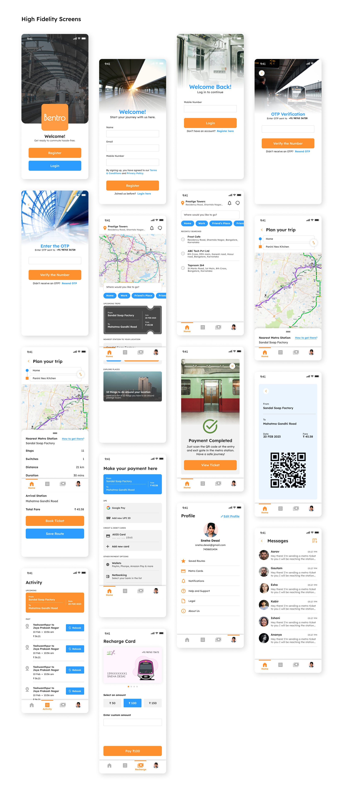

Bentro.
Redesigning the Bangalore Metro app from scratch, because the city deserved better than what it had.
- Role
- Sole Designer — Research · Competitive Analysis · Personas · User Flows · Wireframing · UI Design
- Timeline
- 15 days, March 2023
- Type
- Self-directed personal project
- Platform
- iOS & Android
Why this project.
— A good metro, held back by a bad app.
Bangalore has two metro lines cutting through a city of 12 million people. For daily commuters, students, and anyone trying to get somewhere faster than an auto-rickshaw could manage through traffic, the metro is genuinely useful. The app is not.
The existing BMRCL app was only available on Android. The fare info didn't work reliably. The map was static, a flat image you couldn't interact with. You couldn't check route details with line switches and stops. You couldn't see your trip history or what you'd spent. You definitely couldn't share your trip with a friend so you could meet at the right station.
I used this app. I lived with these frustrations. And I wanted to know what it would look like if someone actually designed it properly.
Understanding
the problem.
— Two commuters, one broken experience.
Before touching a single screen, I spent time understanding who was actually using the metro and what was breaking for them. User research revealed two very different commuter profiles.
Anita, the daily rider
An artist who travels to different parts of the city daily, relying on the metro to save time and money, but constantly running into no trip tracking, no route details with line switches, and a static map that tells her nothing useful.
Rishi, the occasional rider
A student who travels occasionally with friends, can't find the nearest station when he needs one, can't see his trip history to claim reimbursements, and can't coordinate with friends to meet at a stop.
Competitive analysis
Across four apps (the official BMRCL app, BangaloreMetro, BMRCL Bengaluru Metro, and a fourth Bangalore Metro app) no single app solved the full picture. Some were iOS only, some Android only. Some could show routes but not fares. None had a dynamic map. None had trip sharing. The gap between what commuters needed and what existed was obvious and significant.
What I designed.
— Five problems, five features.
The redesign centred on five core problems, each translated into a feature.
- Dynamic metro mapReplaced the static image with an interactive map of lines and routes, letting users zoom, tap stations, and understand the network spatially rather than having to memorise it.
- Trip planning with real-detail route finderShows lines, switches, stops, fare, and time in one view: not just "take Line 1 to Line 2" but exactly where to switch, how long it takes, and what it costs.
- Trip history and transaction trackingA complete record of past journeys with fare, date, and departure and arrival stations. Users can rebook past trips with one tap.
- Nearest station finderA location-aware feature surfaced on the home screen, so you're never left googling which stop is closest.
- Trip sharingSend your journey to a friend so they can track where you are and meet you at the right station, especially useful for students coordinating meetups.
- Smartcard rechargeIn-app recharge for metro cards, with support for multiple saved cards and payment methods.
The process.
— Solo, end to end, in 15 days.
I ran the full design process solo across 15 days: user research and personas, competitive analysis, user flow mapping, grayscale wireframes for every key screen, then high-fidelity UI design.
The user flow was the most important structural decision. I mapped every journey, registration, login, trip planning, station finder, trip history, card recharge, trip sharing, before designing a single screen. Getting the logic right first meant the UI had somewhere solid to land.
The wireframes covered the full app: onboarding, home screen, map, plan your trip, trips (upcoming and past), profile, messages, and recharge. Each screen was designed to reduce the number of steps to complete a task compared to the existing app.
What changed
Every core user task, finding a route, checking a fare, sharing a trip, recharging a card, went from a frustrating workaround or missing feature to a direct, single-flow interaction. The redesign also resolved the platform gap: the new Bentro app was designed to work across iOS and Android, something no single existing solution had managed.
This was one of my earliest projects, and it taught me that the fastest way to understand what to design is to be a user of the thing you're redesigning. I didn't need much research to know this app was broken; I'd lived it. What research gave me was the language to articulate it clearly, and the evidence that my frustrations weren't personal quirks but shared experiences across very different types of users.
Fifteen days is tight. It forced me to make decisions quickly and commit to them, which is a discipline I've carried into every project since.
